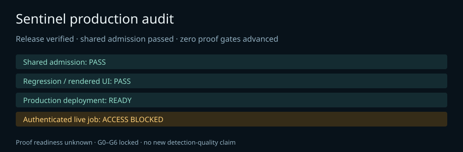

Released commit 31b1a895182b35a1c376a3e532ade9d3107aa13d. No authenticated production job or artifact hashes are claimed.
Local and fixture evidence is separate from production execution. The previous local benign-only evaluation had a 50.17% false-positive rate. Held-out generalization remains unproven.